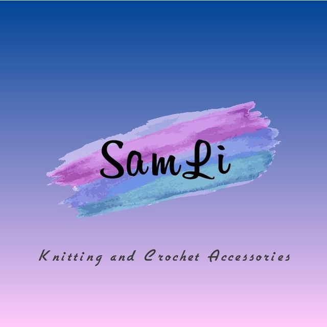
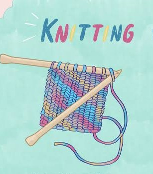
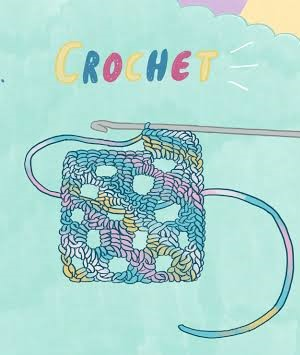

All The Handmade Accessories
You Can Think Of

SamLi Knitted and Crochet Accessories
is a mini-business founded by two cousins
to provide 100% handmade accessories to
people with unique taste. We make:
- Scarfs
- Hats & Beanies
- Bags
- Socks
- Baby Clothes
- Headbands
- Tops
Order your preference now and get your unique
handmade accessory right away.
IT'S MADE WITH LOVE!
